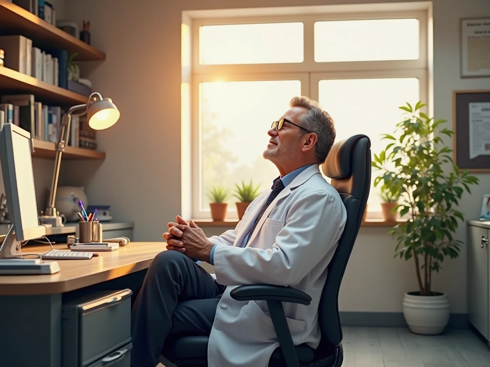

+38(068) 79 72 782
+38(068) 79 72 782Как прекратить запой дома
Umbrella Plus Безопасная Наркология


Бесплатная консультация, работаем круглосуточно 24/7
Umbrella Plus Безопасная Наркология
Алкогольная зависимость – серьёзное заболевание, которое затрагивает здоровье и жизнь человека, разрушает его семью и лишает социальной активности. В Харькове и области существуют специализированные клиники и службы, оказывающие наркологическую помощь и лечение алкоголизма. Сегодня медицина предлагает современные методы коррекции состояния алкоголика, в том числе детоксикацию и медикаментозное вмешательство даже на дому. Однако важно понимать, что лечение алкоголизма – комплексная задача, требующая профессионального подхода. Внимание: статья носит ознакомительный характер и не заменяет консультацию врача-нарколога. При остром состоянии необходимо незамедлительно обратиться за квалифицированной помощью.
Длительные запои (несколько дней непрерывного употребления спиртного) приводят к глубокой интоксикации организма. В этот период человек плохо ест, обезвоживается, нарушаются сон и мышление. Симптомы запоя – сильные головные боли, дрожь в теле, бессонница, тошнота и рвота – усиливаются с каждым днем. Без помощи профессионалов состояние пациента быстро ухудшается: растёт риск сердечно-сосудистых осложнений, судорог и делирия. Поэтому при первых признаках того, что близкий «ушёл в запой», нужно действовать грамотно и осторожно. Ниже мы разберём алгоритм действий и методы помощи при запое – в домашних условиях и с выездом нарколога на дом.
Если родственник или друг находится в состоянии запоя, важно создать для него безопасную обстановку и оказать первичную помощь до приезда специалиста. Рекомендуется:
При тяжелом запое самостоятельные методы помощи ограничены. Самостоятельно вывести человека из запоя без врача крайне опасно. Без квалифицированного осмотра невозможно подобрать безопасную дозу лекарств и провести нужные процедуры. Поэтому главный совет – как можно быстрее обратиться к профессионалам, например вызвать нарколога на дом (см. раздел «Можно ли вызвать нарколога на дом» ниже) или отправить больного в стационар. Профессиональная помощь позволяет избежать ошибок и риска осложнений.
В экстренной ситуации выход из запоя должен быть чётко спланирован. Ниже приведён примерный пошаговый алгоритм действий до и во время проведения детоксикации:
При самостоятельном выходе из запоя без врача следует помнить: риск осложнений очень высок. К потенциально опасным последствиям относятся эпилептические судороги, инсульт, инфаркт, сердечная аритмия, кома, белая горячка и даже смертельный исход. Никто из непрофессионалов не сможет спрогнозировать, когда может начаться делирий или остановка сердца. Поэтому действуйте очень осторожно и прибегайте к помощи нарколога при первых признаках ухудшения.
Одним из основных способов экстренной детоксикации при запое являются капельницы (инфузионная терапия). В Харькове многие медицинские центры и частные клиники оказывают услуги по постановке капельниц при алкогольной интоксикации. Что включает в себя капельница от алкоголя:
Введение инфузионных растворов проводится только врачом. Процедура безболезненна: больной обычно чувствует значительное облегчение уже через 30–60 минут после начала капельницы. Применение капельниц быстро устраняет обезвоживание, восстанавливает электролиты и нормализует артериальное давление, что резко снижает симптомы похмелья и абстиненции. Это безопасно при условии стерильности и правильного подбора компонентов.
Да, в Харькове действует услуга выезда нарколога на дом – круглосуточно и анонимно. Это означает, что при непредвиденной ситуации с алкоголиком вы можете не везти человека в больницу, а вызвать специалиста к себе. Как работает вызов нарколога на дом:
Таким образом, вызов нарколога на дом Харьков – простая и эффективная схема помощи. Она максимально сохраняет комфорт пациента и значительно повышает безопасность выхода из запоя. Главное – не медлить: чем раньше специалист начнёт лечение, тем меньше риск осложнений.
Выведение из запоя на дому – это экстренная помощь, направленная на быстрое устранение острых симптомов интоксикации. Процесс включает несколько этапов:
Важно помнить: вывести человека из запоя на дому можно только при отсутствии угрожающих жизне опасных состояний. Если появляются гипертонический криз, сильные судороги или «белая горячка», лучше госпитализация. В остальном домашняя детоксикация удобна тем, что пациент находится рядом с близкими, нет стрессов от больничной атмосферы, и сохраняется максимальный уровень анонимности.
Вывод из запоя на дому – это первый шаг к полному излечению от зависимости. После выхода из острого состояния обязательно следуют дальнейшее лечение алкоголизма и реабилитация, ведь без них запои могут повторяться. Решение «прекратить запой дома» должно сопровождаться решением «обратиться к наркологу» и пройти курс лечения под наблюдением специалистов.
Медицинский центр UmbrellaPlus в Харькове оказывает профессиональную наркологическую помощь круглосуточно. Наши преимущества:
Если вам нужно прекратить запой дома, быстро вывести человека из запойного состояния или получить лечение алкоголизма в Харькове, звоните в UmbrellaPlus. Мы готовы помочь анонимно, оперативно и с использованием современных методик. Для записи и консультации свяжитесь с нами по телефону 050-021-69-57. С нами вы получите качественную медицинскую помощь без лишних хлопот и со 100% приватностью.
Анонимно

"Никакими усилиями самостоятельно я не смогла преодолеть запой, и наступала ломка, сопровождаемая повышенным давлением и пульсом. Тогда я решила обратиться за помощью в клинику. Врачи оказали мне неоценимую поддержку! Уже прошел месяц, и я не только не употребляю алкоголь, но даже не испытываю к нему желания!"
Анонимно
"Могу с уверенностью порекомендовать данный центр для тех, кто ищет помощь при выводе из запоя. Я неоднократно обращался к ним и могу сказать, что цена соответствует качеству услуг. После проведения капельницы в клинике, вся тяга к алкоголю проходит, и я чувствую себя гораздо лучше. Это действительно эффективный метод, и я благодарен клинике за их профессионализм и заботу!"
Анонимно
"Я очень благодарен за то, что вы помогли мне разобраться с моей проблемой алкоголизма и найти ее решение. Давно осознавал, что без помощи профессионалов я не справлюсь, и я не ошибся, выбрав ваш центр Амбрелла. Здесь действительно предоставляется профессиональная помощь, которая оказалась для меня реальным спасением. Огромное спасибо за вашу поддержку и заботу!"
Анонимно
"Неоднократно я пытался бросить алкоголь самостоятельно, но каждый раз уговаривал себя продолжать. Я сначала ограничивался одной бутылкой в день, потом двумя, и в итоге вновь попадал в запой. Но в итоге, я смог прекратить употребление алкоголя только после того, как обратился в центр Амбрелла и заказал у них услугу вывода из запоя. Уже не пью 3 месяца и удалось полностью восстановиться. Благодарю врача который меня вел - Алексея Валерьевича"
Анонимно
"Здравствуйте! Я хотел бы выразить свою искреннюю благодарность клинике за быстрое и профессиональное освобождение моего мужа пивного рабства! Ранее у меня уже не было никаких надежд на его выздоровление. Однако, благодаря вашим перспективным методам лечения, мы теперь идем к полному отказу от алкоголя. Вы дали нам новую надежду и оказали неоценимую помощь! Спасибо вам за все!"
Анонимно
"Я долгое время страдал от запоев и не мог справиться с этой проблемой. Однако, когда я обратился в этот центр, они быстро помогли мне вернуться на ноги, и самое главное - предоставили мне возможность не возвращаться к запоям. Уже почти полгода я не испытываю запоев! Это для меня настоящее чудо, я никогда не думал, что смогу так преодолеть свои проблемы. Большое спасибо центру Амбрелла!"
Анонимно
"Благодарю ваш центр Амбрелла за оперативное и высококачественное лечение! Женский алкоголизм - это настоящее горе, с которым невозможно справиться в одиночку. Я уже потеряла надежду, но благодаря вашей помощи, она вернулась ко мне! Отдельная благодарность врачу Станиславу Вячеславовичу, а также благодарность Богу за то, что он послал мне такое чудо как ваша центр! Спасибо вам всем!"
Анонимно
"Хочу выразить благодарность врачу Владиславу Алексеевичу за то, что вы избавили меня от этого ужаса. Я уже был в отчаянии, перепробовал множество клиник и центров, но только здесь я наконец получил настоящую помощь! Алкоголь полностью разрушил меня, и если бы не ваша помощь, я, возможно, уже не был бы жив. С вами я смог вернуть себе жизнь и буду благодарен вам всегда!"
Номер телефона:
+380 (97) 369 76 65
+380 (50) 021 69 57
Адрес главного офиса: г. Харьков ул. Сумская 47
Офис вашего города нужно
уточнить
Работаем в: Одессе, Киеве, Львове, Харькове, Днепре,
Запорожье
Telegram: t.me/umbrellaplus
График работы: Круглосуточно